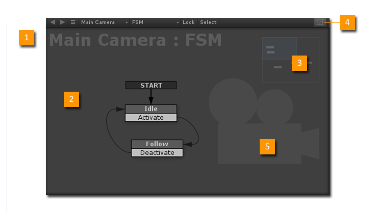
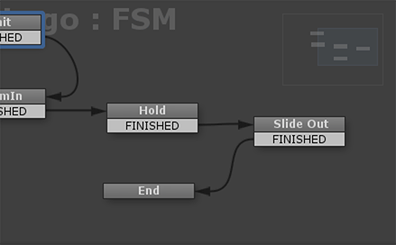
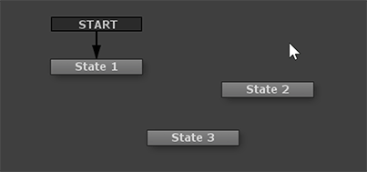
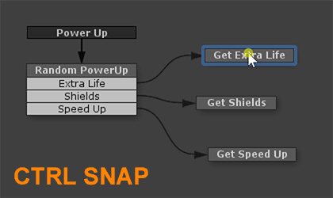
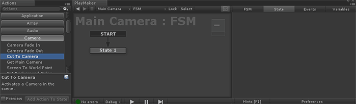

The Graph View is a visual editor used to build and test state machines.

- Selection: Selected GameObject and FSM.
- Canvas: Visual workspace to build and edit FSMs.
- Minimap: Overview of FSM. Click in the map to quickly move the view.
- Minimap Toggle: Toggles the Minimap on/off. You can also set the size in Preferences.
- Watermark: An image that helps identify the FSM. See Watermarks.
View Navigation
- To look around the graph, middle mouse drag the canvas, or use the scroll bars.
- Use the mouse wheel to zoom in/out.
- Press F to quickly frame the selected State.

Minimap
- The Minimap shows an overview of the FSM.
- The blue rectangle shows the current view.
- Click/drag anywhere in the minimap to move the view.
Selecting States
- Left click on a state's title bar to select it.
- Drag a selection marquee around multiple states to select all of them.
- Hold Shift to add to the selection, or Alt to subtract from the selection.
- Click on the canvas to deselect all states.
- Tip: Drag select right to left for crossing selection (like 3ds Max):

Moving States
- Drag any selected state by its title bar to move all selected states around.
- The canvas pans automatically as you move states around.
- Hold Ctrl while dragging states to snap to grid:

Adding States
There are a few ways to add new states:
- Right click the canvas and select Add State
- Copy/Paste another State.
- Paste a Template as new States.
- Drag an action from the Action Browser into the Graph View.

- Ctrl Click the canvas to quickly make a new state.
Adding Transition Events
There are a few ways to add Transition Events to a State:
- Right click a State and select Add Transition
- Right click a State and select Add Global Transition
- Ctrl Click a State to add a new Transition
Creating Transitions Between States
There are a few ways to create Transitions between States:
- Drag a link from a Transition Event to another State.
- Ctrl Drag a link from a Transition Event to create a new target State.
See Also: